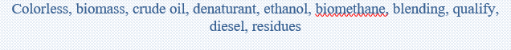
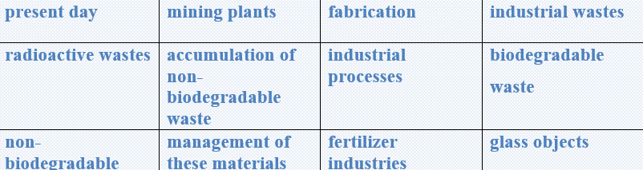

The term biofuels usually apply to liquid fuels and blending components produced from biomass materials called feedstock. Most biofuels are used as transportation fuels, but they may also be used for heating and electricity generation.
Most of the biofuels in use today are liquid fuels including ethanol and biomass-based diesel fuels such as biodiesel, renewable diesel, and other biofuels, which includes sustainable aviation fuels. Biofuels used as transportation fuels are usually blended with petroleum fuels (gasoline and diesel fuel) made from crude oil, but some can be used in their pure form without any blending. Biodiesel and renewable diesel fuels can be used as replacements for distillate fuel for use in vehicles and for heating.
Using biofuels can reduce the need to import crude oil from other countries to make fuels for cars, trucks, trains, and planes. Biofuels are also cleaner-burning fuels and are considered to have lower carbon-dioxide emissions than fuels made from fossil fuels.
Ethanol
Ethanol is a clear, colorless alcohol that can be made from a variety of biomass materials called feedstock (the raw materials used to make a product). Ethanol feedstock include grains and crops with high starch and sugar content such as corn, sorghum, barley, sugar cane, and sugar beets. Ethanol can also be made from feedstock with a high cellulose content including grasses such as switch grass, trees, and agricultural and forestry residues such as corn cobs and stocks, rice straw, sawdust, and wood chips. Fuel ethanol is made by adding a denaturant to ethanol to make it undrinkable for use as a biofuel.
Task1. Vocabulary
Rearrange the letters to make words in bold in the text.
✔️ Chstar_______________
✔️ Ragus_______________
✔️ Areylb______________
✔️ Ckurt________________
✔️ Leuf________________
✔️ Porc________________
✔️ Srgas_________________
✔️ Cier__________________
✔️ Odwo_________________
✔️ Nroc__________________
✔️ Inarg__________________
✔️ Stduwas_______________
Task2. Vocabulary
Find the definitions of the given words and translate into Uzbek.

Task3. Reading
Read the text and answer the questions.
🔸What does biofuel mean?
🔸What are biofuels mostly used for?
🔸What are liquid fuels?
🔸What are biofuels used as transportation fuels blended with?
🔸What are petroleum fuels?
🔸What can biodiesel and renewable diesel fuels be used as replacemen
Task4. Listening
Listen to a radio program about shoppingtourism. Complete the sentences with one or twowords or a number.
1 People shop in other countries because the pricesare ____________________.
2 Thailand has low-cost ____________________.
3 Switzerland is famous for ____________________.
4 New York had ____________________ touristshoppers last year.
5 Dubai is popular because it has very large____________________.
Task5Writing
✔️ Learn the given lexical units.
✔️ Work in groups and explain the meanings of the given lexical units.
✔️ Try to use them in sentences.

Read the case and give some solutions
At present day, there are millions of factories, mills, industries and mining plants all over the world. During fabrication or industrial processes, it is inevitable that some materials are produced. Some industrial wastes are generated in a large amount over the year globally. Some examples of industrial wastes are sandpaper, ash, radioactive wastes, paints, metals, glass, oils, trash, solvents and etc.
There are two types of industrial waste materials:
🔹 Biodegradable
🔹 Non-biodegradable
Non-biodegradable waste is a material which cannot be decomposed. It is a fact that 10-15% of total waste is non-biodegradable. They are hazardous and the management of these materials cannot be done cheaply and easily. Industries like chemical, drugs, iron steel plants, fertilizer industries contribute to the accumulation of non-biodegradable waste by producing fly ash, plastics, gypsum, glass objects and radioactive waste.
Suggest some ways to recycle and remove biodegradable waste that come from industries like drugs, iron steel, fertilizer and chemical.
What does “non-biodegradable” mean?
What is the problem with waste removal?
How serious is this situation?
What is the cause of this problem?
How it is successfully solved?
What is the most optimal solution?
Can present some tips on improving the situation?